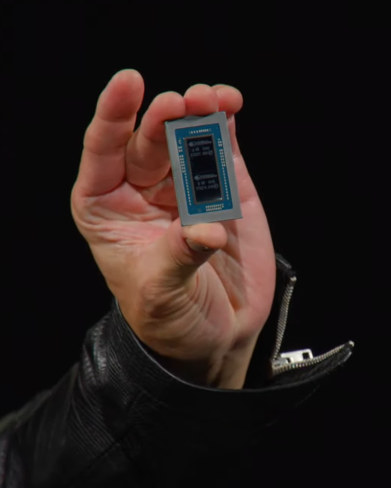
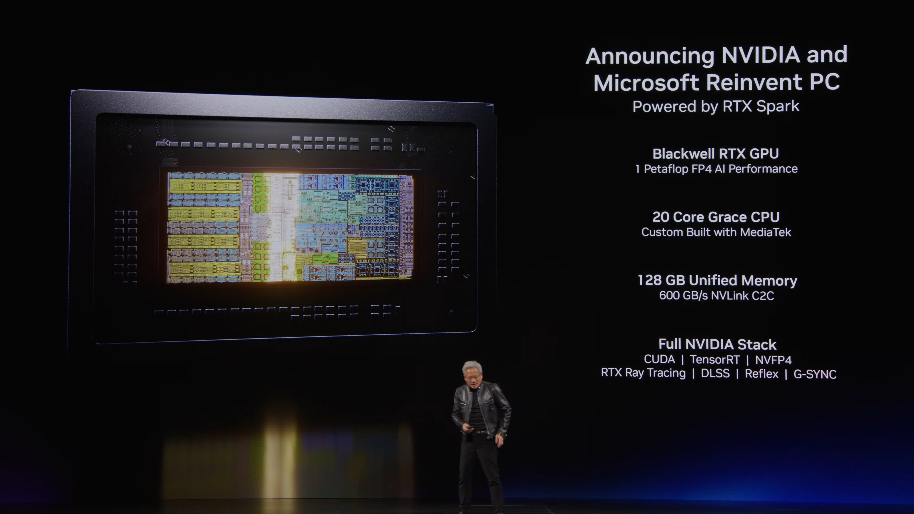
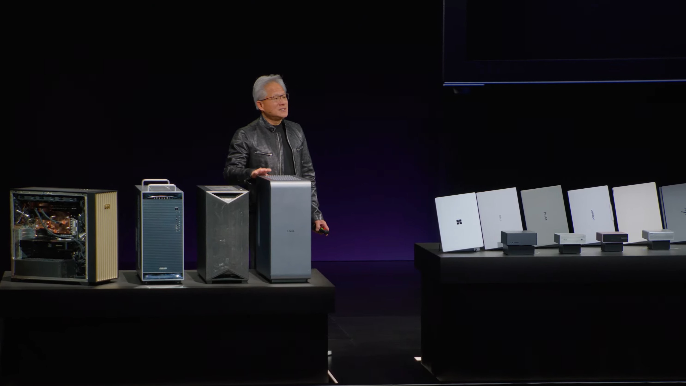
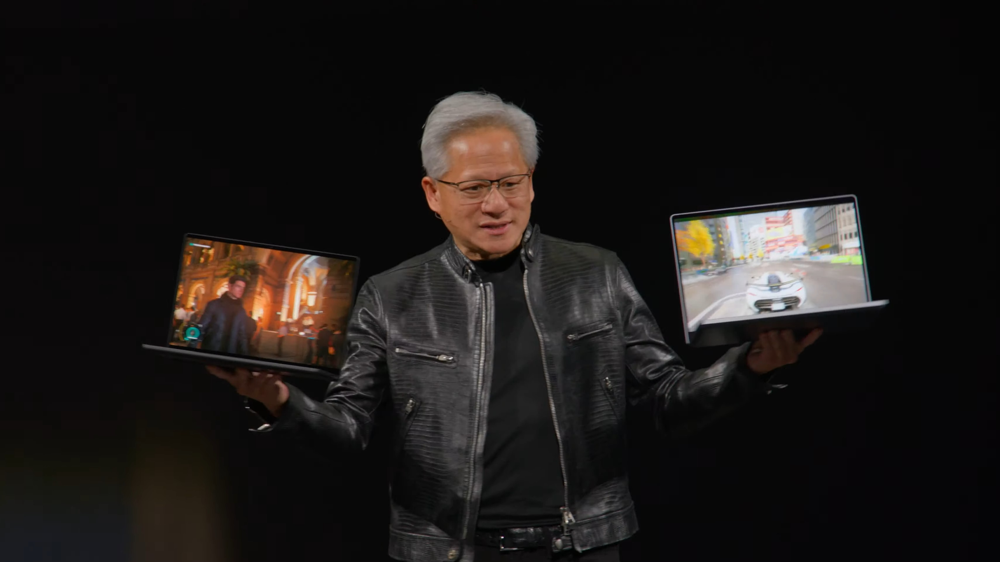

Dieser Artikel ist die Fortsetzung von „Vom Rechenzentrum in den Rucksack“. Dort steht was der RTX Spark ist. Hier steht, für wen er wirklich gebaut wurde.
Die Frage die Nvidia auf der Keynote nicht gestellt hat
Auf der Computex 2026 hat Jensen Huang (Chef Nvidia) den RTX Spark für vier Gruppen angekündigt: Gamer. Kreatoren. Entwickler. KI-Entwickler.
Das klingt nach Plattform-Denken. Es ist aber auch Verkaufs-Rhetorik.
Die ehrliche Antwort kommt in umgekehrter Reihenfolge.
Wer zuoberst auf der Liste steht, wird am teuersten enttäuscht.

Gruppe 4: KI-Entwickler - die einzige Gruppe ohne echte Alternative
Fangen wir mit der Gruppe an, für die der RTX Spark tatsächlich gebaut wurde.
Wer KI-Modelle lokal laufen lässt, wer feinabstimmt, wer 100-Milliarden-Parameter-Modelle ohne Cloud testet: der kommt an Nvidia nicht vorbei. CUDA ist die Sprache, in der KI-Software geschrieben wird. Das hat Apple nicht. Das hat Qualcomm (Chip-Hersteller, Hauptkonkurrent im ARM-Windows-Segment) nicht. Das hat Intel nicht.
Der RTX Spark liefert:
- 1.000 TOPS KI-Performance - das ist 10 bis 20x mehr als aktuelle Intel-, AMD- oder Snapdragon-NPUs mit ihren 50 bis 80 TOPS
- Bis zu 128 GB Unified Memory - der erste Laptop-Chip der GPT-Klasse-Modelle lokal ausführen kann
- NVFP4 - ein neuer Nvidia-Zahlenmodus für mehr Modell-Präzision bei weniger RAM-Verbrauch. 128 GB reichen hier weiter als auf jedem anderen System.
- Kein Cloud-Abo. Keine Latenz. Keine Daten die irgendwo hochgeladen werden.
RTX Spark ist 10 bis 20x drüber. Das ist kein Tipp-Fehler.

Jensen Huang hat es auf der Keynote selbst gesagt: "ein paar hundert Milliarden Parameter" lokal. Das ist GPT-Klasse offline. In einem Gerät das in eine Tasche passt.
Für KI-Entwickler ist der Preis keine ganz so angenehme Zahl. Erwartbar ab ca. 3.000 EUR, das Flaggschiff eher 5.000 EUR und mehr. Aber er ist rechtfertigbar. Wer sonst braucht einen Serverraum - oder einen DGX Spark Desktop, der zieht bis 216 Watt. Für den Schreibtisch kaum praktikabel.
Fazit: Kauf ohne Bauchschmerzen. Das hier ist das allererste Gerät das diese Gruppe wirklich braucht.
Gruppe 3: Kreatoren - stark, aber nur mit einer Bedingung
Adobe hat für den RTX Spark nicht nachgebessert. Adobe hat komplett neu gebaut.
Premiere Pro und Photoshop wurden für die Spark-Architektur von Grund auf neu entwickelt, nicht nur portiert. Nvidias eigener Speedclaim: 2x schneller als die bisherige Implementierung. Dazu direkte Integration mit dem lokalen KI-Agenten, alles ohne Cloud.
Das ist kein Treiber-Update. Adobe macht das nicht für jeden neuen Chip.
Nvidia zeigte mit einem DGX Spark einen 10x Render-Speed-Vorteil gegenüber dem Apple M5 Pro. Explizit durch CUDA-Optimierungen, nicht rohe Hardware-Power. Noch kein unabhängiger Benchmark, keine Überprüfbarkeit. Aber die Richtung ist klar.
Die meisten professionellen Kreatoren-Studios sitzen auf Windows. Sie haben investierte Workflows, Plugins, Lizenzen. Und Adobe investiert bereits ernsthaft in Windows-on-ARM.
Die Bedingung: Windows on ARM muss stabil laufen.
Laut Insidern aus Taipei ist der Windows-11-ARM-Support zum Zeitpunkt der Computex noch nicht so stabil wie die Keynote suggeriert. "Herbst 2026" ist das Versprechen. Wie viel Arbeit dazwischen noch liegt, wird sich zeigen müssen.
Wer auf macOS sitzt und mit dem M5 Pro zufrieden ist, hat keinen Grund jetzt zu wechseln. Wer auf Windows bleibt, CUDA-beschleunigtes kreatives Arbeiten will und das Budget hat: hier gut aufgehoben.

Fazit: Für Windows-Kreatoren die auf CUDA gewartet haben - ja. Alle anderen: Herbst abwarten, nicht vorher kaufen.
Gruppe 2: Entwickler - hier kommt es drauf an
Die klassische .NET-Welt läuft auf Windows on ARM. Das war schon mit Snapdragon X Elite so.
Der moderne Entwickler-Stack sieht anders aus: Linux, WSL, Docker, Node, Python, Rust. Wer in diesen Umgebungen arbeitet, ist im Apple- oder Linux-Ökosystem schon länger zu Hause. Nicht wegen Hype, sondern weil die Tools dort einfach besser funktionieren.
ARM-Emulation hat sich verbessert. Aber ARM-first ist Windows noch nicht. Wer auf Legacy-Toolchains angewiesen ist oder tief in Windows-nativen Stacks arbeitet, profitiert mehr vom RTX Spark als jemand der seinen Workflow in WSL betreibt.
Für klassische App-Entwicklung kein zwingender Grund. Für KI-nahes Development, lokale Modelle, Inference-Tests, CUDA-Entwicklung: gilt Gruppe 4.
Fazit: Wer mit WSL, Docker und macOS-Tools arbeitet: kein Grund. Wer Windows-nativ und CUDA-nah entwickelt: vielleicht das einzige Gerät das Sinn macht.
Gruppe 1: Gamer - die überraschendste Nachricht
Hier ist die überraschende Meldung zuerst:
Anti-Cheat auf ARM ist weitgehend gefixt. Fortnite läuft. Forza läuft. 007 läuft. Teils native ARM-Versionen, teils Emulation. Das war bis vor Kurzem das stärkste Argument gegen Windows on ARM für Gamer. Das gilt nicht mehr.
Der volle RTX-Software-Stack läuft auf dem RTX Spark. Raytracing, DLSS, Framegen, Reflex, G-Sync, alles ist an Bord. Nvidia bringt das komplette Gaming-Ökosystem erstmals auf ARM. Alan Wake 2 hat eine native ARM-Version und zeigt kaum Unterschied zu x86, weil das Spiel GPU-limitiert ist, nicht CPU-limitiert.

Und dann: 32 GB VRAM in einem Laptop.
Weil 64 GB Unified Memory, und davon werden 50 Prozent als GPU-Speicher genutzt.
Eine RTX 5090 Desktop-Karte kostet allein 2.000 EUR und hat 32 GB VRAM. Hier ist das inklusive.
Das klingt stark. Und dann kommen die Zahlen.
Der ASUS ProArt P16 Laptop hat einen massiven Kühler, explizit weil der N1X-Chip heiß wird wenn er voll läuft. Die gezeigten Geräte sind nicht dünn. Sie sind gründlich gekühlt.
Was das für Akkubetrieb und dünne Formfaktoren bedeutet, werden erst echte Launch-Reviews zeigen.
Für Hardcore-Gamer die Workloads auf Windows haben, CUDA wollen und das Budget mitbringen: interessant. Für den normalen Gamer der zwischen einer RTX 5070 Laptop und einem RTX Spark Gerät wählt: die RTX 5070 Laptop kostet deutlich weniger, bei ähnlicher GPU-Performance.
Der RTX Spark ist kein Gaming-Gerät. Es ist ein KI-Gerät das auch gut zockt.
Fazit: Technisch das stärkste Gaming-Laptop-Ding das je angekündigt wurde. Kaufentscheidung: erst wenn echte Benchmarks zeigen was 140 Watt unter Last tatsächlich bedeuten.
Was das für den Rest bedeutet
Ming-Chi Kuo (Apple-Analyst, bekannt für präzise Hardware-Forecasts) schätzt 10 Millionen RTX-Spark-Geräte in zwei Jahren. Das klingt nach Massenmarkt.
Es ist ein iPhone-Quartal.
Die 10 Millionen teilen sich auf acht Hersteller und 30 Laptop-Modelle auf. Dazu Mini-PCs und Desktops. Und auf verschiedene Ausstattungsstufen: 16 GB, 64 GB, 128 GB.
Das 16-GB-Modell und das 128-GB-Modell sind praktisch verschiedene Geräte.
Das 128-GB-Flaggschiff ist das Gerät das in den Demos gezeigt wird.
Das ist das Gerät für KI-Entwickler.
Das Einstiegsmodell mit 16 GB ist eine andere Zielgruppe, eine andere Performance-Klasse, ein viel niedrigerer Preis.
Nvidia spricht davon als wäre es ein Gerät. Das sollte man beim Preis-Performance-Vergleich im Kopf behalten.
Nvidia hat einen Chip für KI-Entwickler gebaut. Und ihn als Laptop für alle vermarktet.
Wer 3.000 bis 5.000 Euro ausgeben will, sollte wissen auf welcher Seite der Tabelle er steht - bevor er es tut.
Teil 1: Vom Rechenzentrum in den Rucksack